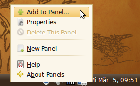

When I reinstall my computer, I usually do these following steps:
- Copy all data to an external HDD
- Write down all WLAN configurations (eventually with screenshots; NOT ONLY PASSWORDS!)
- Write down all programs that I use.
- Export configuration of those programs.
- Wait a week or a month and see if someting is missing in the lists from above.
- Drop the old system and install a new one
Contents
Software I usually install
If possible, I will give the debian package names in the following list:
- LaTeX
gnuplotpdf2svg
- Google Chrome
- Multimedia
vlc: A very good DVD player- OnlineTvRecorder and especially OTR-Verwaltung
avidemux wine mplayer
sudo add-apt-repository ppa:clipgrab-team && sudo apt-get update && sudo apt-get install clipgrab
- Graphics
gimpinkscapediaimagemagick
- Programming
vimpython python3 python-numpy python-setuptools python-mysqldbruby ruby-sqlite3 ruby-mysqlgcc g++apache2 php5 php5-mysqlzshand Oh-my-zsheclipsesqlitebrowsertclphpmyadmin selfhtmlmeld diffpdf
- Themes
- Balazan-Theme from bisigi-project (simply download it.)
- Other
sublime_textlibreofficecurl
- DRM-caused (I want to watch DVDs!)
ubuntu-restricted-extras libdvdcss2 libdvdread4 libdvdnav4 w32codecstotem banshee mplayer rythmbox
Configure
Set standards
update-alternatives --config editor
update-alternatives --config x-www-browser
GUI
I like the old menu bar quite a lot. It opens instantly and is customizable:

Old menu bar
You can get it back in MATE by doing a right-click on the menu. Then click on "add to panel":

{kind=link}
Add to panel
After that, the following dialog will pop up. Choose "Menu Bar"

Add menu bar
DRM-Stuff
sudo /usr/share/doc/libdvdread4/install-css.sh
sudo regionset #use that with caution
vim
.vimrc:
set t_Co=256
set shell=bash
set shellquote=
set shellxquote=
set noshelltemp
syntax on " enable syntax highlighting
filetype on " enable file type detection
colorscheme default
" Set some nice character listings, then activate list
set list listchars=tab:⟶\ ,trail:·,extends:>,precedes:<,nbsp:%
set list
" 1 tab == 4 spaces
set shiftwidth=4
set tabstop=4
set expandtab " use spaces instead of tabs
autocmd FileType make setlocal noexpandtab " Makefiles always need tabs
set number " turn on line numbers
set showmatch " show matching brackets
" Highlight current line
set cursorline
" hi CursorLine cterm=NONE ctermbg=187
" Show when lines get too long
set textwidth=80
set colorcolumn=+1
highlight OverLength ctermbg=red ctermfg=white guibg=#592929
match OverLength /\%81v.\+/
set autoindent " keep intendation level
hi SpecialKey ctermfg=white ctermbg=none cterm=none " make tab sign grey
" highlight LineNr ctermfg=0 ctermbg=187
set statusline+=%F " Add full file path to your existing statusline
set laststatus=2
" execute make
map <C-m> :make
autocmd BufWritePost *.cpp execute '!astyle --style=java --indent=spaces %'
Git
.gitconfig
[user]
name = Martin Thoma
email = info@martin-thoma.de
[diff]
external = git-meld
[diff "pdfdiff"]
command = diffpdf
[core]
attributesfile = ~/.gitattributes
.gitattributes
*.pdf diff=pdfdiff
Data
Download / copy all data back from GitHub / external HDDs to my internal HDD.